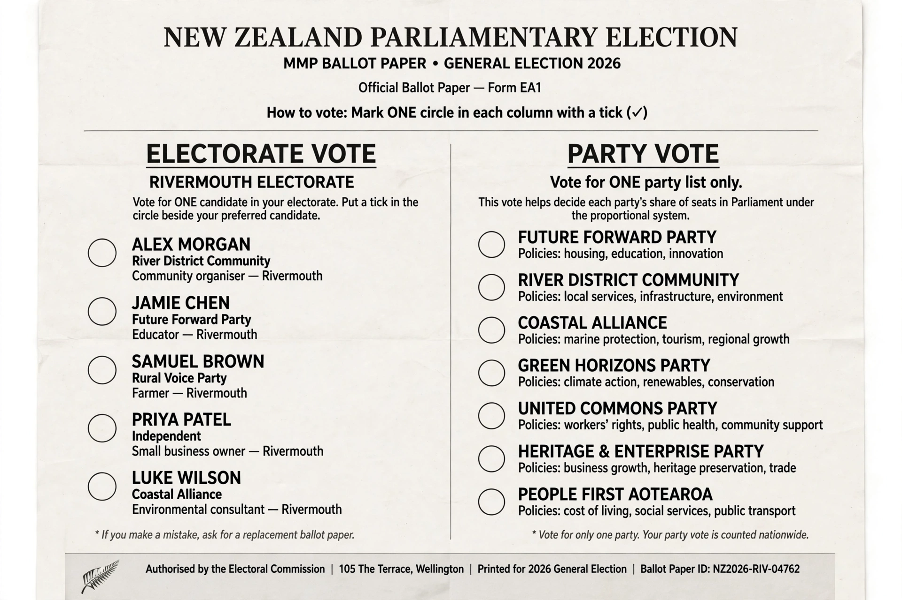

From Wikipedia, the free encyclopedia
The electoral system of New Zealand is mixed-member proportional (MMP), used to elect the single-chamber Parliament since 1996. Each voter has two votes: an electorate vote for a local MP in one of the single-member electorates, and a party vote that determines the overall share of seats each party holds in Parliament. The House of Representatives normally has 120 seats.
Parties qualify for list seats if they win at least 5% of the party vote or at least one electorate seat. Each qualifying party's total entitlement is calculated by the Sainte-Laguë method in proportion to its party vote; electorate seats it has won are deducted, and the remainder is filled from its party list (a closed list). If a party wins more electorates than its party-vote share entitles it to, the extra seats are kept as an overhang, and Parliament grows temporarily beyond 120 members. MMP is a form of the additional-member system operated with full compensation, so final results are highly proportional.

New Zealand previously used first-past-the-post, which twice (1978 and 1981) gave a parliamentary majority to the party that won fewer votes nationwide. A Royal Commission in 1986 recommended MMP, modelled on the German system; voters approved the change in referendums in 1992 and 1993, and the first MMP election in 1996 produced a coalition government. A further referendum in 2011 retained MMP, and a subsequent Electoral Commission review recommended lowering the threshold to 4% and abolishing the one-electorate "coat-tails" rule — reforms debated but, for many years, not enacted.
The system includes dedicated Māori electorates, whose number varies with enrolment on the Māori roll. MMP has made single-party majorities rare — the first under MMP came in 2020, when Labour won 65 seats — and coalition or confidence-and-supply agreements the norm. Because the party vote decides proportionality, incentives for strategic voting differ from plurality systems, though split-ticket ("two ticks") campaigning is common.
Categories: Elections in New Zealand · Electoral systems · Mixed-member proportional representation